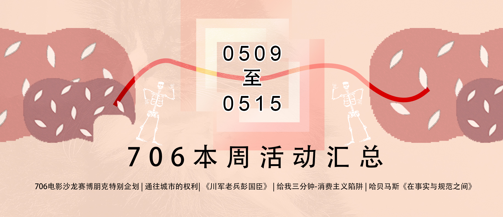
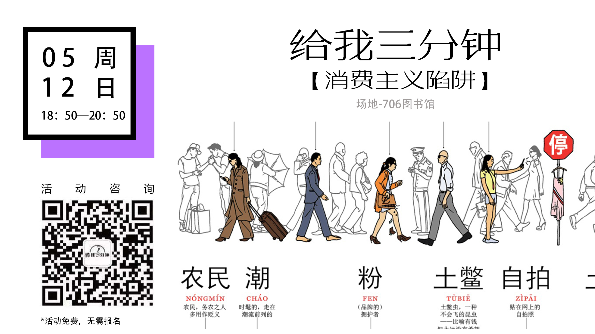
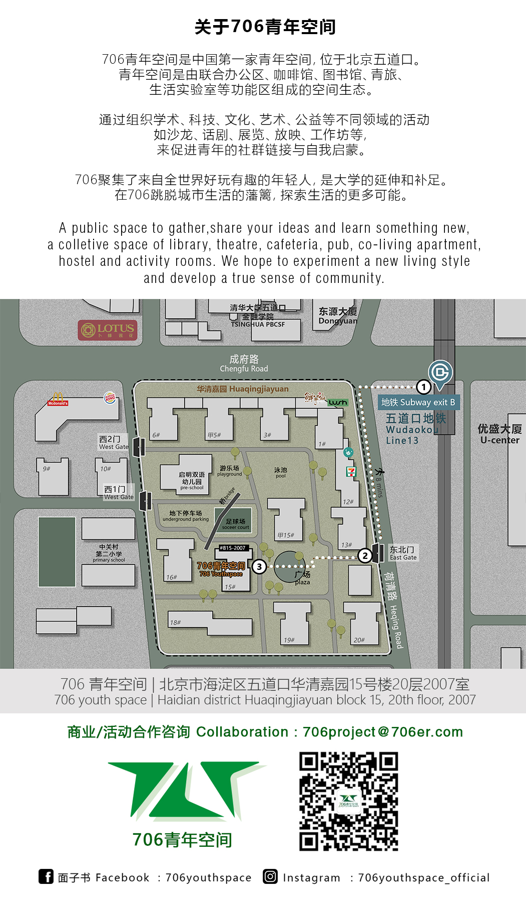

推送指南（设计部）
每周二下午2点前，社群小伙伴（现负责人：杨树/西西弗）在会在“常规活动群”发布信息模板：
hello，大家好，我们的常规活动需要在每周二下午的两点前 完成活动信息的采集，设计部的小伙伴才能展开工作，希望大家能理解、配合哈
活动流程 ：https://shimo.im/docs/8XlHhkVxrK8nkzXo （对外）
706活动负责人须知：706活动流程规范（对内）
706新媒体内部分工：周三活动推送流程及规则（完整版）
需要参照的文件：
活动信息采集（周二前截止）:麦客表单
微信群（所有活动负责人）
706常规活动群（每周更新）:https://shimo.im/sheet/TVzW9rDSH8opaB95/qasFe
acc: wufangrong@706er.com
p/w: 706qnkj
微信群主：706社群小伙伴
如果发现“排期表”和“麦客表单”时间场地有冲突或者信息不对称，以排期表为主，也需要和活动负责人（杨树）确认
图片制作好后，将此石墨文档的标题日期更新 “一周活动推送（m.dd - m.dd）” 后转交（复制粘贴链接) 给负责排版的伙伴（现负责人：西西弗)
新媒体 | 头条
- 头条封面图
- 尺寸 ： 16:9 & 2.35:1 (请随时更新最新的公众号格式）

时间表
完成时间表后，可以先截图放到 “常规活动群”，请所有活动负责人和706活动对接人检查确认信息正确
| 日期 | 时间 | 地点 | 主题 | |
|---|---|---|---|---|
| 5.09 礼拜四 | 19:30-21:30 | 706图书馆 | 破格电影沙龙特别企划 \ | 【赛博朋克系列】第一部-攻壳机动队1995 |
| 5.10 礼拜五 | 19:00 | 706图书馆 | 从朝圣者到跨境少数民族——朝鲜半岛700年 | |
| 5.11 礼拜六 | 14:30 | 706咖啡馆玻璃桌 | 706空间研究小组 | |
| 5.11 礼拜六 | 19:00 -22:00 | 706咖啡馆玻璃桌 | 小黑屋放映纪录片 \ | 《川军老兵彭国臣》 |
| 5.12 礼拜天 | 14:00-16:00 | 706咖啡馆玻璃桌 | 同道政治哲学读书会 \ | 哈贝马斯《在事实与规范之间》 |
| 5.12 礼拜天 | 18:50-20:50 | 706图书馆 | 给我三分钟 \ | 消费主义陷阱 |
| 5.14 礼拜二 | 19:30-21:30 | 706图书馆 | 语言角 language corner \ | TVshows电视节目 |
- 活动配图

注意：“麻圆微沙龙”由于是706旗下独立的品牌活动，由706活动负责人招募主讲人
所以它有自己的独立石墨文档：https://shimo.im/docs/pUEGxbkcQI43ibnS
（单挑推送条件: 3个或以上 的微沙龙活动，单挑推送的编辑文档如同）
和原有的设计模板：
- 设计模板
- 次条 配图
- 706 公众号素材
头图 动图（设计师：瑞芬）
底图 706介绍（设计师：凯晶）

- 其他相关文件
706新媒体栏目介绍 （2019暂定的新媒体栏目和固定配图）
706青年空间常规活动矩阵 （活动专栏图）